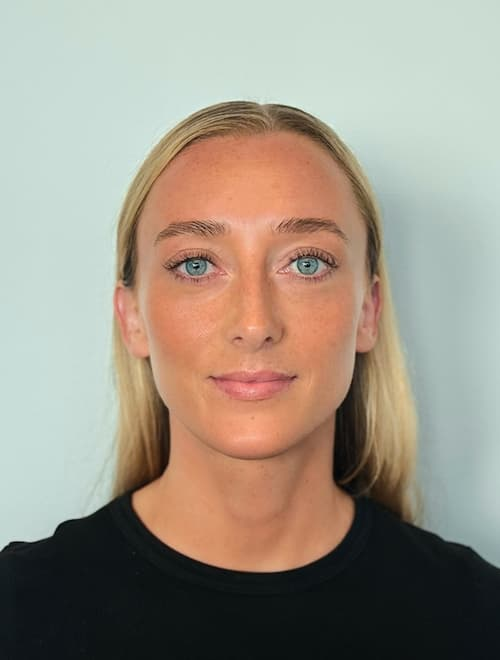
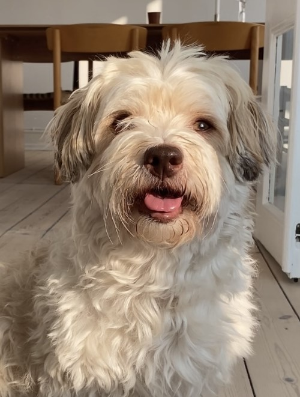

Signe Skriver
Jeg har altid været drevet af kreativitet og en nysgerrighed på
medieverdenen. Som kostumier på kortfilm og projektleder på en podcast har
jeg arbejdet med både det visuelle og det organisatoriske, hvilket har
givet mig lyst til at samle mine interesser i én uddannelse. Med
multimediedesign kan jeg forene det kreative og det strategiske og
samtidig få en bredere indsigt i de mange muligheder, medieverdenen
rummer.
Min erfaring:
Jeg har erfaring med visuel kommunikation og storytelling, hvor jeg bl.a.
har udviklet visuelle koncepter, arbejdet med tekstformidling og
produceret content til sociale medier.
Min hund og jeg:
Til højre ses min hund Willy, som er en stor del af mig. Han er en bichon
havaneser på snart 7 år og følger mig helst overalt.


Links og information
- Telefon: 27828737
- Studie mail: silo0003@stud.ek.dk
- Private mail: signe.lorentzen@hotmail.com
- https://www.instagram.com/signeskriverl/
- https://www.facebook.com/signe.lorentzen.7